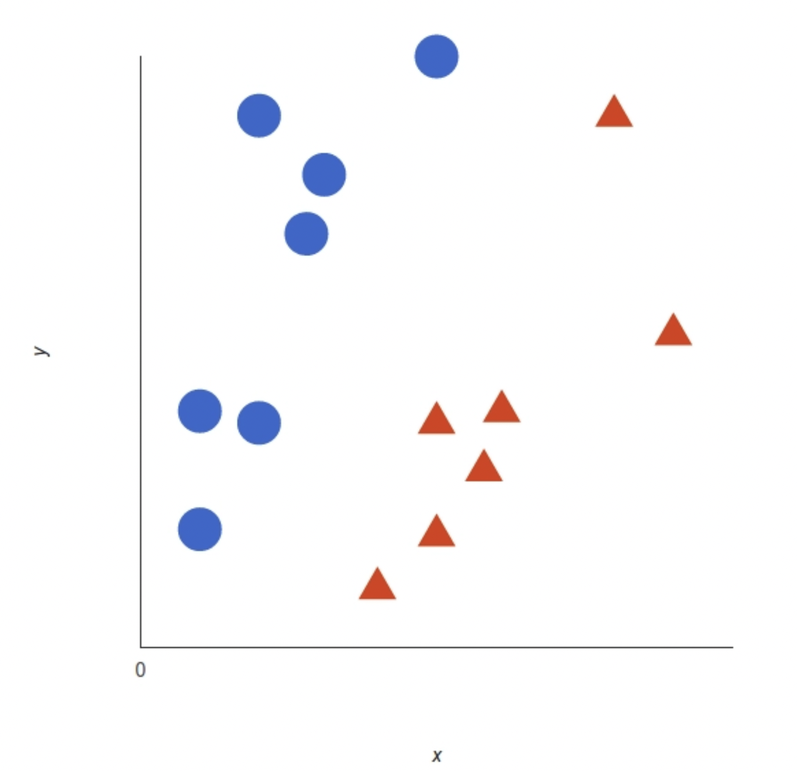
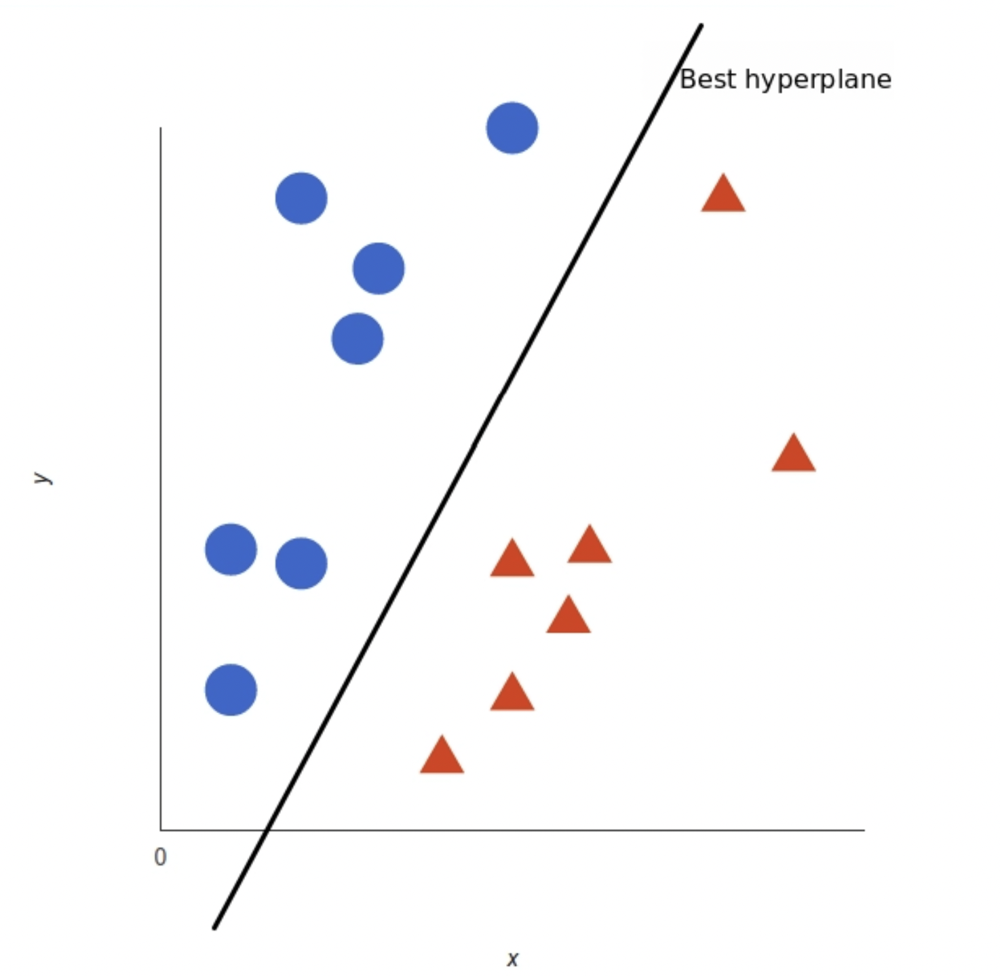
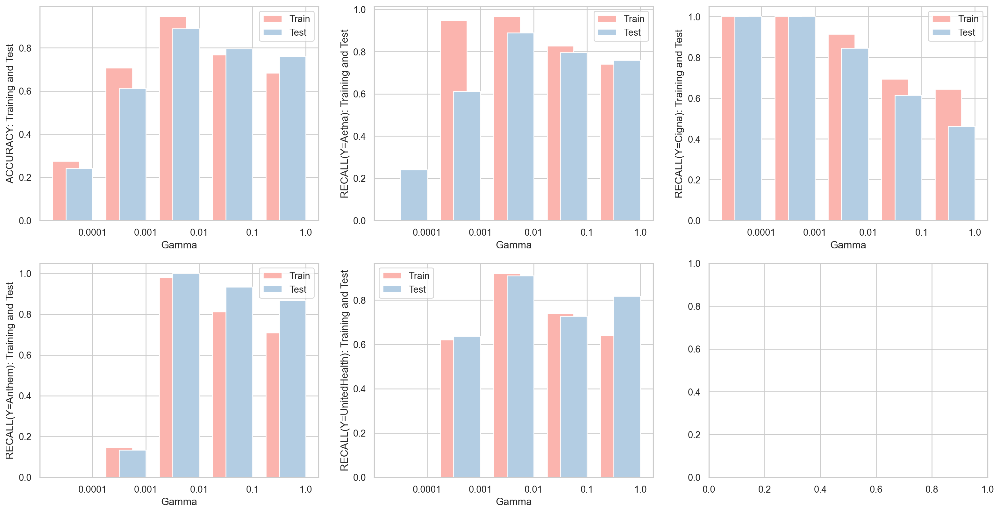

A support vector machine (SVM) is a supervised machine learning model that uses classification algorithms for two-group classification problems. After giving an SVM model sets of labeled training data for each category, they're able to categorize new text.
Compared to newer algorithms like neural networks, they have two main advantages: higher speed and better performance with a limited number of samples (in the thousands). This makes the algorithm very suitable for text classification problems, where it's common to have access to a dataset of at most a couple of thousands of tagged samples.
How Does SVM Work?
The basics of Support Vector Machines and how it works are best understood with a simple example. Let's imagine we have two tags: red and blue, and our data has two features: x and y. We want a classifier that, given a pair of (x,y) coordinates, outputs if it's either red or blue. We plot our already labeled training data on a plane:

A support vector machine takes these data points and outputs the hyperplane (which in two dimensions it's simply a line) that best separates the tags. This line is the decision boundary: anything that falls to one side of it we will classify as blue, and anything that falls to the other as red.

But, what exactly is the best hyperplane? For SVM, it's the one that maximizes the margins from both tags. In other words: the hyperplane (remember it's a line in this case) whose distance to the nearest element of each tag is the largest.
Code
import pandas as pdimport numpy as npimport matplotlib.pyplot as pltimport seaborn as snsfrom sklearn.metrics import confusion_matrix, ConfusionMatrixDisplayfrom sklearn import treefrom sklearn.metrics import accuracy_scorefrom sklearn.metrics import precision_scorefrom sklearn.metrics import recall_scoreimport randomfrom sklearn.model_selection import train_test_splitfrom sklearn.svm import SVCfrom sklearn.metrics import classification_report, confusion_matrix
Class Distribution
For text data, the label consists of four insurance company. I gathered the data from twitter API using the hashtags of these insurance company. Each tweet in the data belongs to a topic of hashtag. Based on the output, we can see that the distribution of labels is very balanced. Having a balanced data set for a model would generate higher accuracy models, higher balanced accuracy and balanced detection rate. Hence, its important to have a balanced data set for a classification model.
distribution = df0['label'].value_counts().reset_index().rename(columns={'index': 'label','label':'count'})distribution['proportion'] = distribution['count']/len(df0)print('-----------------------------------')print(distribution)print('-----------------------------------')ax = sns.barplot(x ='label', y ='count', data = distribution)ax.set_title('Barplot of Health Insurance Company')plt.show()
For feature selection, I manually subsetted the original dataset and keep only the first 170 high frequency vocabulary in the columns. The method of how I select the features is similar to using the varianve threshold. If a word shows up only once or twice, it is not informative to train our data.Thus,keep only the high frequency words is the same as to keep the high variance ones.
Code
X = df0[wf['word'][:170]]ux = np.mean(X,axis =0) # NORMALIZE Xsx = np.std(X,axis =0)for i inrange(170): X.iloc[:,i] = (X.iloc[:,i] - ux[i])/sx[i]x_train, x_test, y_train, y_test = train_test_split(X, Y, test_size=0.2, random_state=909391)print("TRAINING SHAPES:",x_train.shape,y_train.shape)print("TEST SHAPES:",x_test.shape,y_test.shape)
TRAINING SHAPES: (215, 170) (215,)
TEST SHAPES: (54, 170) (54,)
Hyperparameter Tuning
Kernel Tuning
The main hyperparameter of the SVM is the kernel. It maps the observations into some feature space. Ideally the observations are more easily (linearly) separable after this transformation. There are multiple standard kernels for this transformations, e.g. the linear kernel, the polynomial kernel and the radial kernel. The choice of the kernel and their hyperparameters affect greatly the separability of the classes (in classification) and the performance of the algorithm.
In Kernel tuning, we found that the best kernal to train our data is sigmoid whose accuracy for trainig is 98% and for testing is 93%.
Code
kernel = ['linear', 'poly', 'rbf', 'sigmoid']for i in kernel: model = SVC(kernel = i, degree =2) model.fit(x_train,y_train) yp_train = model.predict(x_train) yp_test = model.predict(x_test)print('---------------------------------------------------')print('For kernel: ',i)print('Training accuracy is: ', accuracy_score(y_train, yp_train))print('Testing accuracy is: ', accuracy_score(y_test, yp_test))
---------------------------------------------------
For kernel: linear
Training accuracy is: 1.0
Testing accuracy is: 0.9074074074074074
---------------------------------------------------
For kernel: poly
Training accuracy is: 0.786046511627907
Testing accuracy is: 0.46296296296296297
---------------------------------------------------
For kernel: rbf
Training accuracy is: 0.9953488372093023
Testing accuracy is: 0.8148148148148148
---------------------------------------------------
For kernel: sigmoid
Training accuracy is: 0.986046511627907
Testing accuracy is: 0.9259259259259259
Gamma Tuning
The gamma parameter defines how far the influence of a single training example reaches, with low values meaning 'far' and high values meaning 'close'. In other words, with low gamma, points far away from plausible seperation line are considered in calculation for the seperation line. Where as high gamma means the points close to plausible line are considered in calculation. After tuning, we found that the optimized gamma for our model is 0.01.
def resultPlot(train_results,test_results,param): sns.set_theme(style='whitegrid', palette="Pastel1") fig,ax = plt.subplots(2,3) fig.set_size_inches(20,10) axis1 = np.arange(len(test_results)) axis2 = [x +.25for x in axis1] ax1 = ax[0,0] ax1.bar(axis1,train_results[1],label ='Train', width=0.5) ax1.bar(axis2,test_results[1],label ='Test',width=0.5) ax1.set_xlabel(param) ax1.set_ylabel("ACCURACY: Training and Test") ax1.legend() ax1.set_xticks([x +.5for x inrange(len(test_results))], test_results[0]) ax2 = ax[0,1] ax2.bar(axis1,train_results[2],label ='Train', width=0.5) ax2.bar(axis2,test_results[2],label ='Test', width=0.5) ax2.set_xlabel(param) ax2.legend() ax2.set_xticks([x +.5for x inrange(len(test_results))], test_results[0]) ax2.set_ylabel("RECALL(Y=Aetna): Training and Test") ax3 = ax[0,2] ax3.bar(axis1,train_results[3],label ='Train', width=0.5) ax3.bar(axis2,test_results[3],label ='Test', width=0.5) ax3.set_xlabel(param) ax3.legend() ax3.set_ylabel("RECALL(Y=Cigna): Training and Test") ax3.set_xticks([x +.5for x inrange(len(test_results))], test_results[0]) ax4 = ax[1,0] ax4.bar(axis1,train_results[4],label ='Train', width=0.5) ax4.bar(axis2,test_results[4],label ='Test', width=0.5) ax4.set_xlabel(param) ax4.legend() ax4.set_ylabel("RECALL(Y=Anthem): Training and Test") ax4.set_xticks([x +.5for x inrange(len(test_results))], test_results[0]) ax5 = ax[1,1] ax5.bar(axis1,train_results[5],label ='Train', width=0.5) ax5.bar(axis2,test_results[5],label ='Test', width=0.5) ax5.set_xlabel(param) ax5.legend() ax5.set_ylabel("RECALL(Y=UnitedHealth): Training and Test") ax5.set_xticks([x +.5for x inrange(len(test_results))], test_results[0])
Code
resultPlot(train_results, test_results, 'Gamma')

Regularization (C parameter) Tuning
The regularization (C) parameter tells the SVM optimization how much you want to avoid misclassifying. For large value C, the optimization will chose a smaller-margin hyperplane if that hyperplane does a better job getting all the training points classified correclty. Conversely, a very small C parameter will cause the optimizer to look for a large-margin seperating hyperplane, even if that hyperplane misclassifies more points. The optimized C parameter after tuning is 1.
Code
test_results=[]train_results=[]C = [0.1,1.0,5.0,10.0,50.0,100.0,1000.0 ]for i in C: model = SVC(kernel ='sigmoid', gamma=0.01, C = i) model.fit(x_train,y_train) yp_train = model.predict(x_train) yp_test = model.predict(x_test) a,b = tunningResult(y_train, y_test, yp_train, yp_test) test_results.append([i]+b) train_results.append([i]+a)test_results = pd.DataFrame(test_results)train_results = pd.DataFrame(train_results)
In the final model, I used the set of optimized the hyperparameter in SVC to train on the training sets. The result is surprisingly good. According to the printed classification report, the training accuracy is 94.4% and the testing accuracy is around 89%. This means that when we input some new data into this model, the likelihood of outputting the correct label is 89%, which is considered very accurate for a four-label data. We can also double-check the confusion matrix an see that almost all the points are located in the diagnol.
---jupyter: python3title: "SVM on Text Data"date: "10/24/2022"pdf-engine: lualatexformat: html: theme : Minty toc: true code-tools: true code-fold: true code-summary: "Code" toc-title: Contentsexecute: warning: false---### Method**What is Support Vector Machines?**A support vector machine (SVM) is a supervised machine learning model that uses classification algorithms for two-group classification problems. After giving an SVM model sets of labeled training data for each category, they're able to categorize new text.Compared to newer algorithms like neural networks, they have two main advantages: higher speed and better performance with a limited number of samples (in the thousands). This makes the algorithm very suitable for text classification problems, where it's common to have access to a dataset of at most a couple of thousands of tagged samples.**How Does SVM Work?** The basics of Support Vector Machines and how it works are best understood with a simple example. Let's imagine we have two tags: red and blue, and our data has two features: x and y. We want a classifier that, given a pair of (x,y) coordinates, outputs if it's either red or blue. We plot our already labeled training data on a plane: A support vector machine takes these data points and outputs the hyperplane (which in two dimensions it's simply a line) that best separates the tags. This line is the decision boundary: anything that falls to one side of it we will classify as blue, and anything that falls to the other as red. But, what exactly is the best hyperplane? For SVM, it's the one that maximizes the margins from both tags. In other words: the hyperplane (remember it's a line in this case) whose distance to the nearest element of each tag is the largest.```{python}import pandas as pdimport numpy as npimport matplotlib.pyplot as pltimport seaborn as snsfrom sklearn.metrics import confusion_matrix, ConfusionMatrixDisplayfrom sklearn import treefrom sklearn.metrics import accuracy_scorefrom sklearn.metrics import precision_scorefrom sklearn.metrics import recall_scoreimport randomfrom sklearn.model_selection import train_test_splitfrom sklearn.svm import SVCfrom sklearn.metrics import classification_report, confusion_matrix```## Class DistributionFor text data, the label consists of four insurance company. I gathered the data from twitter API using the hashtags of these insurance company. Each tweet in the data belongs to a topic of hashtag. Based on the output, we can see that the distribution of labels is very balanced. Having a balanced data set for a model would generate higher accuracy models, higher balanced accuracy and balanced detection rate. Hence, its important to have a balanced data set for a classification model. ```{python}df0 = pd.read_csv('/Users/liumingqian/anly-501-project-liumingqian0511/data/01-modified-data/vec.csv')wf = pd.read_csv('/Users/liumingqian/anly-501-project-liumingqian0511/data/01-modified-data/word_frequency_text.csv')``````{python}distribution = df0['label'].value_counts().reset_index().rename(columns={'index': 'label','label':'count'})distribution['proportion'] = distribution['count']/len(df0)print('-----------------------------------')print(distribution)print('-----------------------------------')ax = sns.barplot(x ='label', y ='count', data = distribution)ax.set_title('Barplot of Health Insurance Company')plt.show()```## Random Classifier```{python}def random_classifier(y_data): random.seed(909391) ypred=[]for i inrange(0,len(y_data)): ypred.append(np.random.choice(distribution['label'], p = distribution['proportion']))return ypred``````{python}Y = df0['label']predicted_label = random_classifier(Y)``````{python}def confusion_plot(y_data,y_pred):print('----------------------Classification Report---------------------------')print('ACCURACY:', accuracy_score(y_data, y_pred))print('RECALL (Y = Aetna):', recall_score(y_data, y_pred,labels=[distribution['label'][0]], average='weighted'))print('RECALL (Y = Cigna):', recall_score(y_data, y_pred,labels=[distribution['label'][1]], average='weighted'))print('RECALL (Y = Anthem ):', recall_score(y_data, y_pred,labels=[distribution['label'][2]], average='weighted'))print('RECALL (Y = UnitedHealth):', recall_score(y_data, y_pred,labels=[distribution['label'][3]], average='weighted'))print('PRECISION (Y = Aetna):', precision_score(y_data,y_pred,labels=[distribution['label'][0]],average='weighted'))print('PRECISION (Y = Cigna):', precision_score(y_data,y_pred,labels=[distribution['label'][1]], average='weighted'))print('PRECISION (Y = Anthem):', precision_score(y_data,y_pred,labels=[distribution['label'][2]], average='weighted'))print('PRECISION (Y = UnitedHealth):', precision_score(y_data,y_pred,labels=[distribution['label'][3]], average='weighted'))print('--------------------------Confusion Matrix-----------------------------')print(confusion_matrix(y_data,y_pred)) ConfusionMatrixDisplay.from_predictions(y_data, y_pred) plt.show()``````{python}confusion_plot(Y,predicted_label)```## Feature Selection: Support Vector ClassifierFor feature selection, I manually subsetted the original dataset and keep only the first 170 high frequency vocabulary in the columns. The method of how I select the features is similar to using the varianve threshold. If a word shows up only once or twice, it is not informative to train our data.Thus,keep only the high frequency words is the same as to keep the high variance ones.```{python}X = df0[wf['word'][:170]]ux = np.mean(X,axis =0) # NORMALIZE Xsx = np.std(X,axis =0)for i inrange(170): X.iloc[:,i] = (X.iloc[:,i] - ux[i])/sx[i]x_train, x_test, y_train, y_test = train_test_split(X, Y, test_size=0.2, random_state=909391)print("TRAINING SHAPES:",x_train.shape,y_train.shape)print("TEST SHAPES:",x_test.shape,y_test.shape)```## Hyperparameter Tuning- Kernel TuningThe main hyperparameter of the SVM is the kernel. It maps the observations into some feature space. Ideally the observations are more easily (linearly) separable after this transformation. There are multiple standard kernels for this transformations, e.g. the linear kernel, the polynomial kernel and the radial kernel. The choice of the kernel and their hyperparameters affect greatly the separability of the classes (in classification) and the performance of the algorithm.In Kernel tuning, we found that the best kernal to train our data is sigmoid whose accuracy for trainig is 98% and for testing is 93%.```{python}kernel = ['linear', 'poly', 'rbf', 'sigmoid']for i in kernel: model = SVC(kernel = i, degree =2) model.fit(x_train,y_train) yp_train = model.predict(x_train) yp_test = model.predict(x_test)print('---------------------------------------------------')print('For kernel: ',i)print('Training accuracy is: ', accuracy_score(y_train, yp_train))print('Testing accuracy is: ', accuracy_score(y_test, yp_test))```- Gamma TuningThe gamma parameter defines how far the influence of a single training example reaches, with low values meaning 'far' and high values meaning 'close'. In other words, with low gamma, points far away from plausible seperation line are considered in calculation for the seperation line. Where as high gamma means the points close to plausible line are considered in calculation. After tuning, we found that the optimized gamma for our model is 0.01.```{python}def tunningResult(y_train, y_test, yp_train, yp_test): accuracy_train = accuracy_score(y_train, yp_train) recall_0_train = recall_score(y_train, yp_train,labels=[distribution['label'][0]], average='weighted') recall_1_train = recall_score(y_train, yp_train,labels=[distribution['label'][1]], average='weighted') recall_2_train = recall_score(y_train, yp_train,labels=[distribution['label'][2]], average='weighted') recall_3_train = recall_score(y_train, yp_train,labels=[distribution['label'][3]], average='weighted') accuracy_test = accuracy_score(y_test, yp_test) recall_0_test = recall_score(y_test, yp_test,labels=distribution['label'][0], average='weighted') recall_1_test = recall_score(y_test, yp_test,labels=[distribution['label'][1]], average='weighted') recall_2_test = recall_score(y_test, yp_test,labels=[distribution['label'][2]], average='weighted') recall_3_test = recall_score(y_test, yp_test,labels=[distribution['label'][3]], average='weighted')return [accuracy_train, recall_0_train,recall_1_train,recall_2_train,recall_3_train],[accuracy_test,recall_0_test,recall_1_test,recall_2_test,recall_3_test]``````{python}test_results=[]train_results=[]gamma = [0.0001, 0.001, 0.01, 0.1, 1.0]for i in gamma: model = SVC(kernel ='sigmoid', gamma=i) model.fit(x_train,y_train) yp_train = model.predict(x_train) yp_test = model.predict(x_test) a,b = tunningResult(y_train, y_test, yp_train, yp_test) test_results.append([i]+b) train_results.append([i]+a)test_results = pd.DataFrame(test_results)train_results = pd.DataFrame(train_results)``````{python}print(test_results)``````{python}def resultPlot(train_results,test_results,param): sns.set_theme(style='whitegrid', palette="Pastel1") fig,ax = plt.subplots(2,3) fig.set_size_inches(20,10) axis1 = np.arange(len(test_results)) axis2 = [x +.25for x in axis1] ax1 = ax[0,0] ax1.bar(axis1,train_results[1],label ='Train', width=0.5) ax1.bar(axis2,test_results[1],label ='Test',width=0.5) ax1.set_xlabel(param) ax1.set_ylabel("ACCURACY: Training and Test") ax1.legend() ax1.set_xticks([x +.5for x inrange(len(test_results))], test_results[0]) ax2 = ax[0,1] ax2.bar(axis1,train_results[2],label ='Train', width=0.5) ax2.bar(axis2,test_results[2],label ='Test', width=0.5) ax2.set_xlabel(param) ax2.legend() ax2.set_xticks([x +.5for x inrange(len(test_results))], test_results[0]) ax2.set_ylabel("RECALL(Y=Aetna): Training and Test") ax3 = ax[0,2] ax3.bar(axis1,train_results[3],label ='Train', width=0.5) ax3.bar(axis2,test_results[3],label ='Test', width=0.5) ax3.set_xlabel(param) ax3.legend() ax3.set_ylabel("RECALL(Y=Cigna): Training and Test") ax3.set_xticks([x +.5for x inrange(len(test_results))], test_results[0]) ax4 = ax[1,0] ax4.bar(axis1,train_results[4],label ='Train', width=0.5) ax4.bar(axis2,test_results[4],label ='Test', width=0.5) ax4.set_xlabel(param) ax4.legend() ax4.set_ylabel("RECALL(Y=Anthem): Training and Test") ax4.set_xticks([x +.5for x inrange(len(test_results))], test_results[0]) ax5 = ax[1,1] ax5.bar(axis1,train_results[5],label ='Train', width=0.5) ax5.bar(axis2,test_results[5],label ='Test', width=0.5) ax5.set_xlabel(param) ax5.legend() ax5.set_ylabel("RECALL(Y=UnitedHealth): Training and Test") ax5.set_xticks([x +.5for x inrange(len(test_results))], test_results[0])``````{python}resultPlot(train_results, test_results, 'Gamma')```- Regularization (C parameter) TuningThe regularization (C) parameter tells the SVM optimization how much you want to avoid misclassifying. For large value C, the optimization will chose a smaller-margin hyperplane if that hyperplane does a better job getting all the training points classified correclty. Conversely, a very small C parameter will cause the optimizer to look for a large-margin seperating hyperplane, even if that hyperplane misclassifies more points. The optimized C parameter after tuning is 1. ```{python}test_results=[]train_results=[]C = [0.1,1.0,5.0,10.0,50.0,100.0,1000.0 ]for i in C: model = SVC(kernel ='sigmoid', gamma=0.01, C = i) model.fit(x_train,y_train) yp_train = model.predict(x_train) yp_test = model.predict(x_test) a,b = tunningResult(y_train, y_test, yp_train, yp_test) test_results.append([i]+b) train_results.append([i]+a)test_results = pd.DataFrame(test_results)train_results = pd.DataFrame(train_results)``````{python}print(test_results)``````{python}resultPlot(train_results, test_results, 'Gamma')```## Final Result and ConclusionIn the final model, I used the set of optimized the hyperparameter in SVC to train on the training sets. The result is surprisingly good. According to the printed classification report, the training accuracy is 94.4% and the testing accuracy is around 89%. This means that when we input some new data into this model, the likelihood of outputting the correct label is 89%, which is considered very accurate for a four-label data. We can also double-check the confusion matrix an see that almost all the points are located in the diagnol.```{python}final_model = SVC(kernel ='sigmoid', gamma=0.01, C =1)final_model.fit(x_train,y_train)yp_train = final_model.predict(x_train)yp_test = final_model.predict(x_test)``````{python}print('----------------------------Training---------------------------------')confusion_plot(y_train, yp_train)``````{python}print('----------------------------Testing---------------------------------')confusion_plot(y_test, yp_test)```